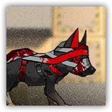

冬灵猎犬Winterwisp Hound
近战 物理；普通 感染生物

|
本地人培养并操纵的猎犬。自古以来都是土著民和早期拓荒者的得力助手。 |
冬灵猎犬丨Winterwisp Hound
中型野兽（感染生物），无阵营
| AC 11 | 先攻 +1（11） |
| HP 30（4d8+12） | |
| 速度 40尺 | |
| 调整 | 豁免 | 调整 | 豁免 | 调整 | 豁免 | |||||||||
|---|---|---|---|---|---|---|---|---|---|---|---|---|---|---|
| 力量 | 14 | +2 | +2 | 敏捷 | 12 | +1 | +3 | 体质 | 16 | +3 | +3 | |||
| 智力 | 3 | -3 | -3 | 感知 | 14 | +2 | +2 | 魅力 | 8 | -1 | -1 |
| 技能 察觉+4，隐匿+3 |
| 抗性 寒冷，毒素 |
| 感官 黑暗视觉30尺，被动察觉13 |
| 语言 无 |
| CR 1/2（XP 100；PB +2） |
特质 Traits
集群战术 Pack Tactics。冬灵猎犬至少有一个未处于失能的盟友在目标生物5尺内时，它对该生物发动的攻击检定有优势。
敏锐嗅听觉 Keen Hearing and Smell。冬灵猎犬依赖听觉或嗅觉进行的感知（察觉）检定具有优势。
动作 Actions
啃咬 Bite。近战攻击检定：+4，触及5尺。命中：5（1d6+2）点穿刺伤害。
冬灵猎犬 Pro | Winterwisp Hound Pro
近战 物理；普通 感染生物
|  |
本地人培养并操纵的猎犬。作为犬群的头领，自古以来都是土著民和早期拓荒者的得力助手。 |
冬灵猎犬 Pro丨Winterwisp Hound Pro
中型野兽（感染生物），无阵营
| AC 11 | 先攻 +3（13） |
| HP 45（6d8+18） | |
| 速度 40尺 | |
| 调整 | 豁免 | 调整 | 豁免 | 调整 | 豁免 | |||||||||
|---|---|---|---|---|---|---|---|---|---|---|---|---|---|---|
| 力量 | 15 | +2 | +2 | 敏捷 | 12 | +1 | +3 | 体质 | 16 | +3 | +3 | |||
| 智力 | 3 | -3 | -3 | 感知 | 14 | +2 | +2 | 魅力 | 8 | -1 | -1 |
| 技能 察觉+4，隐匿+3 |
| 抗性 寒冷，毒素 |
| 感官 黑暗视觉30尺，被动察觉14 |
| 语言 无 |
| CR 1（XP 200；PB +2） |
特质 Traits
集群战术 Pack Tactics。冬灵猎犬至少有一个未处于失能的盟友在目标生物5尺内时，它对该生物发动的攻击检定有优势。
敏锐嗅听觉 Keen Hearing and Smell。冬灵猎犬依赖听觉或嗅觉进行的感知（察觉）检定具有优势。
动作 Actions
多重攻击 Multiattack。冬灵猎犬Pro发动两次啃咬攻击。
啃咬 Bite。近战攻击检定：+4，触及5尺。命中：6（2d4+2）点穿刺伤害。